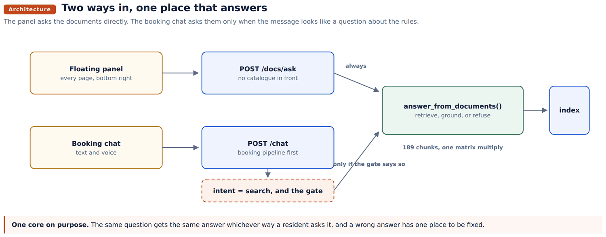
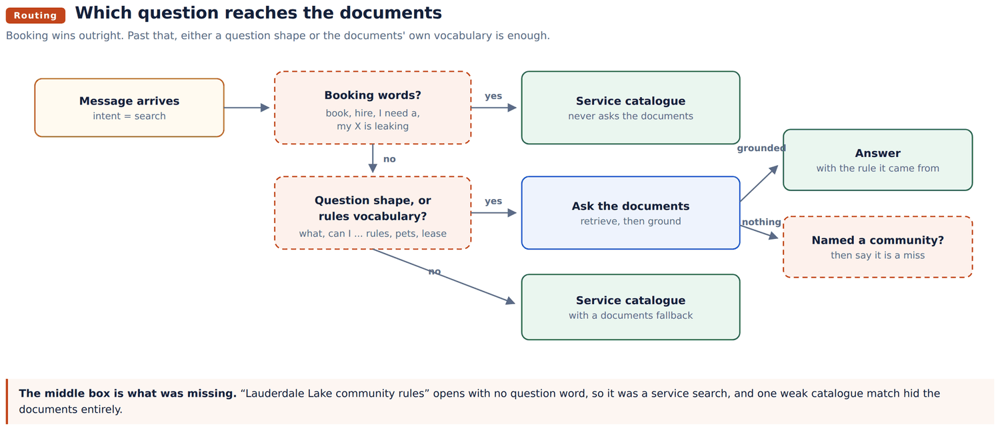
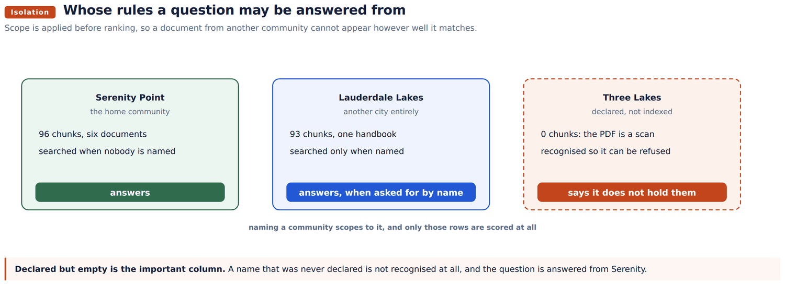
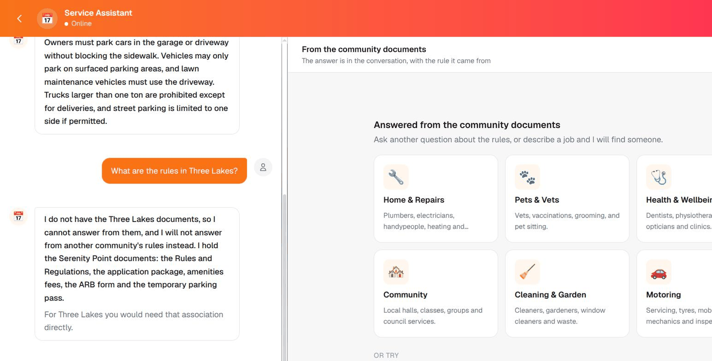
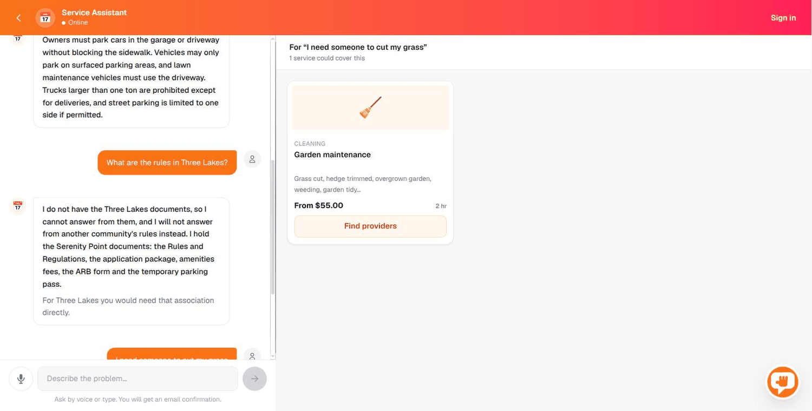

Technical reference
Community documents: how the assistant answers, and from whose rules
The document assistant end to end: how a question is routed, how a community is recognised, why one community can never be answered from another's documents, and what to do when a new association sends its paperwork.
Abad Naseer · 20 August 2026 · every behaviour checked against the live server
The Service Assistant answers two different kinds of question through one chat box. "My sink is leaking" is a request for a tradesperson and goes to the service catalogue. "What are the quiet hours" is a question about the rules and is answered from the association's own documents. This is a reference for the second one: how a question reaches the documents, which community's documents it may be answered from, and what to do when a new association sends its paperwork.
Two rules run through everything below, and both are enforced by code rather than by asking a model nicely.
refusal.** If nothing clears the retrieval floor, the refusal is returned without a model being called at all, so the usual failure of a document assistant, answering plausibly from its own training, has nowhere to happen.
names are similar, not when the other document is the better match, not when we hold nothing for the community that was asked about.
The second rule is why this document exists in the shape it does. On 20 August a resident question about Three Lakes was answered out of the Serenity Point rules, because "Lake" sits close to "lakes" in the embedding space and nothing downstream knew the difference mattered. Rules about somebody's home, delivered confidently, from a document that does not govern them.
There is one retrieval core and two front doors. Both call the same function over the same index, so a question gets the same answer whichever way it is asked, and a wrong answer has one place to be fixed.

The floating panel. Bottom right of every page, on every route. It posts straight to POST /api/v1/docs/ask and has no service catalogue in front of it, so every question it receives is a question about the documents.
The booking chat. POST /api/v1/chat is a booking pipeline first. The message is classified by intent.parse into checkout, add, remove, set quantity, view cart, conversational or search, and only a search can reach the documents at all. Inside that branch the routing gate below decides whether the documents are asked before the catalogue, after it, or not at all.
Three things decide, in this order.
Booking wins outright. _BOOKING_SHAPE matches book, order, arrange, send, hire, come out, quote, appointment, "I need a", "I need someone", and "my X is broken or leaking or blocked". If it matches, the documents are not consulted. This is not a nicety: measured over twenty real phrasings, "someone to cut my grass" scores 0.470 against the lawn rule, higher than several genuine policy questions score, so the retrieval score cannot make this call and the shape of the message has to.
Then either shape sends it to the documents. A question shape (_POLICY_SHAPE: what, when, where, which, who, how much, how many, how long, how do I, can I, may I, am I allowed, do I need, is there, are there, are we, is it ok) or the documents' own vocabulary (_DOC_SHAPE: rules, regulations, bylaws, covenants, guidelines, restrictions, policy, HOA, association, ordinances, handbook, quiet hours, curfew, noise, architectural, ARB, approval, violation, fines, lease, leasing, tenant, pets, trash, recycling, amenities).
The vocabulary half is what was missing until 20 August. "Lauderdale Lake community rules" is how people actually search: a noun phrase, no verb, no question mark. It opened with none of the question words, so it was treated as a service search, the catalogue matched "Community hall booking" weakly, and a resident asking about the rules was shown a hall to hire. One loose catalogue match was enough to hide the documents entirely.
Then, if the message names a community, the documents own the answer. A miss is reported as a miss rather than falling through to a service list. Falling through is what produced the screenshot above: a tradesperson is not a worse answer to "Lauderdale Lake community rules", it is not an answer to it.

Being wrong in the direction of the documents is cheap. When they do not cover the question the lookup returns nothing and the catalogue search runs exactly as before, so the cost is one extra retrieval against 189 chunks held in memory.
app/services/docs_index.py holds the index in memory: 189 chunks at 384 dimensions is about 124 KB of floats, and the whole search is one matrix multiply. It follows what catalog_index.py already does for the service catalogue, so there is one pattern in this codebase rather than two.
| Step | What happens |
|---|---|
| Load | app/data/serenity_docs.json is read once, on first use. Chunks and their vectors are separated, and each community's row numbers are recorded so a scoped search is a slice rather than a scan. |
| Scope | The communities named in the question, or Serenity if none are named. See section 5. |
| Embed | The query only. Through rag.embed_text, which is the model the booking search already holds open. |
| Score | Dot product against the rows in scope. Vectors were normalised at build time, so the dot product is the cosine. |
| Floor | MIN_SCORE = 0.30. Anything below it is not returned. |
| Answer | The top four passages are the only context the model sees, and it is told to reply NO_ANSWER if they do not cover the question. |
The embedding model is shared on purpose. The first version of this file loaded its own SentenceTransformer, roughly 90 MB of weights plus torch's allocator on top. The plumber service runs under a MemoryMax cgroup limit and already sits at about 500 MB, so every question failed on the live box with "embedding model unavailable" while passing in the test suite, because pytest runs outside the cgroup. The index is built with the same model, so the vectors are directly comparable.
Where the floor came from. Genuine questions score 0.35 to 0.75. Things the documents say nothing about sit under 0.30. The gap is comfortable and the cost of being wrong is asymmetric: a refusal is a small annoyance, an invented rule about someone's home is not.
The floor is not the only guard, and should not be. "What are your opening hours on Christmas Day" pulls the nuisance rule at about 0.40, because that rule really does discuss holidays and curfews. It is the nearest thing in the corpus and retrieval is right to return it. The documents still do not state opening hours, so refusing that one is the model's job. Raising the floor to swallow it would cost real answers: "what colour can I paint my house" scores 0.478.
Every chunk carries a community tag. HOME_COMMUNITY is serenity.
COMMUNITIES in docs_index.py is a small registry: a key, a label to say back to the resident, and the aliases a resident might type. A question's words are compared against those aliases after both sides are normalised.
Normalisation lowercases, singularises crudely, and drops filler that decorates a name without identifying it: the, a, of, in, city, town, community, association, HOA, homeowners, point, village, estates, subdivision, neighbourhood.
| Typed | Normalised | Resolves to |
|---|---|---|
| Lauderdale Lake community rules | lauderdale lake rule | lauderdale lakes |
| rules at Serenity Point | rule serenity | serenity |
| Three Lake Community quiet hours | three lake quiet hour | three lakes |
| can I fish in the lake | can i fish lake | nobody |
The singular rule is deliberately crude. It only has to make "lakes" and "lake" the same word, which is the whole of the bug it was written for: the client typed "Lauderdale Lake", the tag said "lauderdale lakes", and the substring test that used to live here missed by one letter.
Matching is on consecutive words, not substrings, so "Lakeview Drive" cannot match "lake" and a name only matches where it was actually written.
Naming a community scopes to that community. It does not add it to home.
Only the rows belonging to the communities in scope are scored at all, so a document from anywhere else cannot appear in the results however well it matches. This is the change that stopped the second failure in the client's screenshots. The Lauderdale handbook is 93 chunks against Serenity's 96, so under the old behaviour, which searched both and filtered afterwards, naming Lauderdale was enough for its ordinances to fill the top four and push the Serenity answer out.
Naming nothing means Serenity only, which is unchanged. Naming two communities searches both, which is a fair question: "how do Serenity and Lauderdale Lakes differ on parking" is a comparison, and mixing is what was asked for.
If the question names a community that has no chunks in the index, the assistant says so and stops.
I do not have the Three Lakes documents, so I cannot answer from them, and I will not answer from another community's rules instead.
This is checked before any search runs, and search() refuses again if it is reached directly, so no path through the module can answer a question about one community out of another's documents. Both front doors return this message rather than nothing, because in the booking chat "nothing" would send the resident on to a service search and their question would go unanswered.

Availability is read off the loaded index, never declared. A community becomes answerable the moment its chunks are in the index, with no code change.
208 sections, from twelve documents across six associations.
| Community | Documents | Sections |
|---|---|---|
| Serenity Point | Rules and Regulations, management pack, application package, ARB form, amenities fees, parking pass | 97 |
| Lauderdale Lakes | City of Lauderdale Lakes Code Compliance Handbook | 92 |
| Three Lakes | mailbox guidelines, design review form, direct debit form | 16 |
| Kendall Square | approved colour archive | 1 |
| Valencia | approved colour archive | 1 |
| Enclave At Old Cutler | approved colour archive | 1 |
Lauderdale Lakes is a different city: Serenity Point is in Miami Lakes. Each of the others is a separate association. All of them are tagged, so a resident asking about their own bin day is never answered out of another city's ordinances, and nobody is told to paint their door with another association's colour.
The three colour archives are three columns wide: the surfaces on one line, the paint codes a few lines below, the colour names below that. Flattened the way every other document is, they read "Body Trim Accent SW 6106 SW 6076 SW 6119 Kilim Beige Turkish Coffee Antique White", and a resident asking what colour to paint their body could be told Turkish Coffee.
So the columns are paired by their position on the page before anything else happens, and the chunk says "Body is SW 6106 Kilim Beige" in as many words. If the layout ever changes so that no pairs are found, the build stops rather than guessing, because a wrong pairing here is a wrong instruction about somebody's home.
| Document | Why |
|---|---|
| Three Lakes Design Standards, 23 pages | a scan, needs OCR and a careful read |
| Serenity occupancy application, 11 pages | a scan |
| Three Lakes site map | a drawing: OCR would not help |
| Three Lakes subsurface drainage | a drawing |
The last two are worth stating plainly: they are pictures. No amount of text extraction makes a site map answerable, and they belong in the download list rather than the index.
Three Lakes answers now, but not from everything. Three of its documents arrived readable on 21 August and are indexed. Its design standards and covenant guidelines PDF is still a scan: an image of a page, with no text layer. pdftotext returns zero characters from it. There is nothing to chunk and nothing to embed, so it is not in the index and questions about it are refused by name.
The same is true of the Serenity occupancy application. Both files sit in backend/knowledge/needs-ocr/ rather than in a community folder, which is what keeps them out of the build.
What it would take. The index is built offline, on a laptop, and shipped as JSON, so this needs no server dependency: only an OCR engine, tesseract or ocrmypdf, on whichever machine runs the build script. That is a small install.
Why it has not been done. OCR of a scanned covenant document will contain errors, and those errors would become rules about someone's home. The honest sequence is to OCR it, read the extracted text against the PDF by eye, correct it, and only then index it. That is an hour of careful work, not a switch, and it is worth asking the association for a text PDF first: a document that was printed and scanned usually still exists as a file somewhere.
Until then the assistant says it does not hold them. That is the correct behaviour, and it is deliberately not a silent gap.
The documents disagree with each other in at least five places. The assistant does not pick a winner. It states both and names the document each came from, because choosing silently would be inventing a rule.
| Subject | One document says | The other says |
|---|---|---|
| Quiet hours | Rule 18: no loud music from 11:00PM, resuming 9:00AM | Rule 2: nothing after 10pm Sunday to Thursday, midnight Friday and Saturday |
| Lease term | Application requirements: minimum one year | Use restrictions: no lease less than six months |
| Pets | Rules sheet: reads as a blanket ban | Management pack: domestic pets allowed, on a leash, per County ordinance |
| Decision timescales | Stated differently in two places | |
| Site working hours | Stated differently in two places |
Retrieval has to hand the model both sides or it cannot report the disagreement, which is why the chunker keeps both documents rather than deduplicating them, and why a test asserts that both quiet hours rules are retrieved together for the same question.
These need a decision from the association about which document is authoritative. Until one is given, showing both is the only honest answer.
Two things, and the second is the one that is easy to forget.
1. Index the documents. Put the PDF under backend/knowledge/<community>/, add a line to MANIFEST in scripts/build_doc_index.py giving its path, title, short name and community tag, and rerun the builder on a laptop:
cd backend
python3 scripts/build_doc_index.pyThe builder extracts text with pdftotext -layout into a .txt sidecar committed beside the PDF, chunks by structure, embeds, and writes app/data/serenity_docs.json. It exits with an error if a PDF produces no text, which is how a scan announces itself.
2. Declare the community name. Add a Community entry to COMMUNITIES in app/services/docs_index.py:
Community("three lakes", "Three Lakes",
("three lakes", "three lake", "three lakes community")),This step is not optional and it is not cosmetic. A community name that has never been declared is not recognised as a name at all, so a question about it is treated as an ordinary question and answered from Serenity's documents. That is the exact failure this whole design exists to prevent, and it comes back the moment a document is indexed without its name being registered.
The registry is the one hand maintained list in this feature. Everything else, including whether a community can be answered at all, is read off the index. Declare the name even when there are no documents yet: that is what turns a silent wrong answer into "I do not have the Three Lakes documents".
Then run the tests, redeploy the backend, and restart the service. The index is loaded once at first use, so a restart is required for a new index to be seen.
| File | What it does |
|---|---|
app/services/docs_index.py | The index, the community registry, name normalisation, scoping, retrieval |
app/api/docs.py | The prompt, the refusals, small talk, /docs/ask, /docs/suggestions, and answer_from_documents() which both front doors call |
app/services/conversation.py | The routing gate in the booking chat |
scripts/build_doc_index.py | The offline builder: extraction, chunking, embedding |
app/data/serenity_docs.json | The shipped index, 189 chunks, 920 KB |
backend/knowledge/ | The source PDFs and their text sidecars |
frontend/src/components/chat/HelpWidget.tsx | The floating panel |
frontend/src/components/chat/ChatPage.tsx | The booking chat, including the results pane |
Changed on 20 August, in response to the client's screenshots:
docs_index.py. Added the COMMUNITIES registry, named_communities(), unavailable(), documents_for() and word based normalisation, replacing a substring test that missed "Lauderdale Lake" by one letter. Community rows are now indexed at load and retrieval scores only the rows in scope, replacing rank then filter. Naming a community scopes to it instead of adding it to home.
api/docs.py. A named community with no documents is now refused by name, in both front doors, before any search runs. An ordinary miss now names the documents that were actually searched, and lists what is held for that community, because "I could not find that in the community documents" is misleading when the question named Lauderdale Lakes and the Lauderdale handbook is what was searched.
conversation.py. Added _DOC_SHAPE and _wants_documents(), so a noun phrase reaches the documents. A named community's question is answered by the documents or reported as a miss, never handed to the catalogue. The document lookup no longer runs twice for a question the documents cannot answer.
ChatPage.tsx. The results pane no longer describes a documents answer as a failed search. It said "Nobody on the platform lists anything like that" beside every correct answer about the rules, which is true of the catalogue and beside the point of what was asked.
No change to the index format, the chunker, the embedding model, the prompt, or the grounding rules.
289 automated tests pass. 55 of them are new, in backend/tests/test_community_scope.py, and they use the real index and the real embedding model. Nothing in that file calls a language model, so the retrieval and scoping behaviour is asserted without a network round trip.
cd backend
.venv/bin/python -m pytest -q --ignore=tests/legacy_shopWhat the new tests assert:
without "community" and "point"
are not read as a question about Lauderdale Lakes
the refusal itself rather than nothing
Serenity, naming nobody stays at home, naming both searches both
still be reported
The 21 failures in tests/legacy_shop/ are pre-existing and unrelated. They fail on no such table: items, a schema from the grocery application this codebase was forked from.
Checked live, on the deployed server, through both front doors and through a real browser:
| Asked | Answered |
|---|---|
| Lauderdale Lake community rules | From the Lauderdale documents, naming the handbook it holds |
| Lauderdale Lakes quiet hours | Lauderdale only, honest miss: the handbook states no hours |
| Serenity parking rules | Serenity only, quotes the parking rule |
| What are the quiet hours? | Both rules, reported as a disagreement |
| What are the rules in Three Lakes? | I do not have the Three Lakes documents |
| Three Lakes community rules | The same |
| I need someone to cut my grass | Garden maintenance, from $55.00 |
| book a plumber | The booking flow |
| I need a boiler repair | Eight services |
| my sink is leaking | Five services |


trusted. Section 7.
declaring its community name brings back the silent wrong answer.
refuses honestly. It reads like a fault and is not one.
document is authoritative. Section 8.
first use.